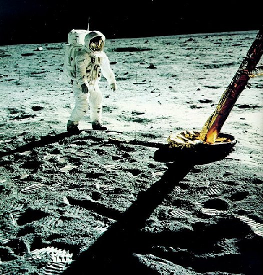

| Edwin E. Aldrin, Jr., then an Air Force colonel, was the lunar module pilot for Apollo 11 . He had graduated third in his class at West Point, and earned a Ph.D. in astronautics at MIT. His prior space experience was as pilot for Gemini 12. |
|  |
| The loneliness of space exploration is captured in this picture of Buzz Aldrin standing by Eagle's foil-wrapped footpad. (But a tiny image of Armstrong taking the photograph can be seen on his reflective faceplate.) The slightly arms-out stance derives from the pressurized suit. A plaque on the landing stage, which is still on the Moon, is engraved: "Here men from the planet Earth first set foot upon the Moon, July 1969, A.D. We came in peace for all mankind." |
|
Prelude
All was ready. Everything had been done. Projects Mercury and Gemini. Seven years of Project Apollo. The work of more than 300,000 Americans. Six previous unmanned and manned Apollo flights. Planning, testing, analyzing, training. The time had come. We had a great deal of confidence. We had confidence in our hardware: the Saturn rocket, the command module, and the lunar module. All flight segments had been flown on the earlier Apollo fights with the exception of the descent to and the accent from the Moon's surface and, of course, the exploration work on the surface. These portions were far from trivial, however, and we had concentrated our training on them. Months of simulation with our colleagues in the Mission Control Center had convinced us that they were ready. Although confident, we were certainly not overconfident. In research and in exploration, the unexpected is always expected. We were not overly concerned with our safety, but we would not be surprised if a malfunction or an unforeseen occurrence prevented a successful lunar landing. As we ascended in the elevator to the top of the Saturn on the morning of July 16, 1969, we knew that hundreds of thousands of Americans had given their best effort to give us this chance. Now it was time for us to give our best. |
|
| Edwin E. Aldrin, Jr., then an Air Force colonel, was the lunar module pilot for Apollo 11 . He had graduated third in his class at West Point, and earned a Ph.D. in astronautics at MIT. His prior space experience was as pilot for Gemini 12. |

| Michael Collins was the command module pilot, in orbit above the two others on the surface. A West Pointer and Air Force lieutenant colonel, he had flown in Gemini 10. These unsmiling photos were taken before the mission; but also see here. |

| Neil Armstrong, commander of Apollo 11, a civilian, had flown in space in Gemini 8. An engineer and test pilot, he once flew the X-15 above 200,000 feet and at more than 4000 mph. |